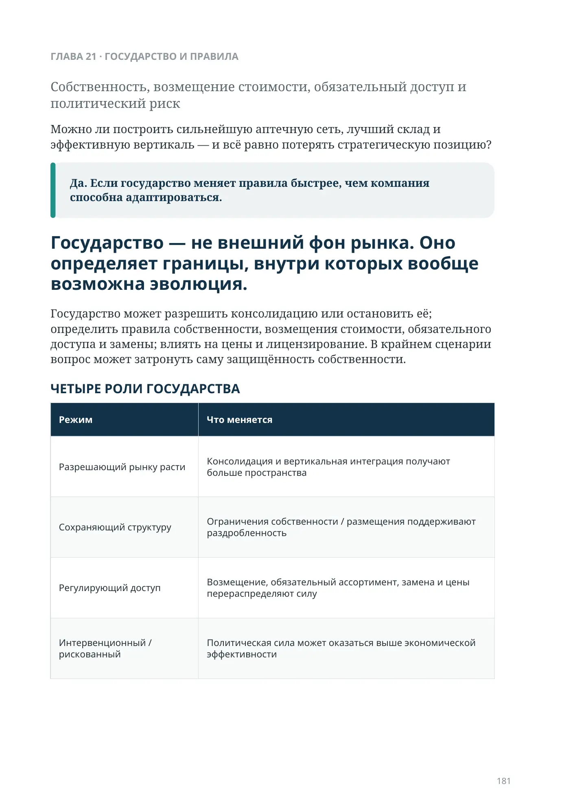
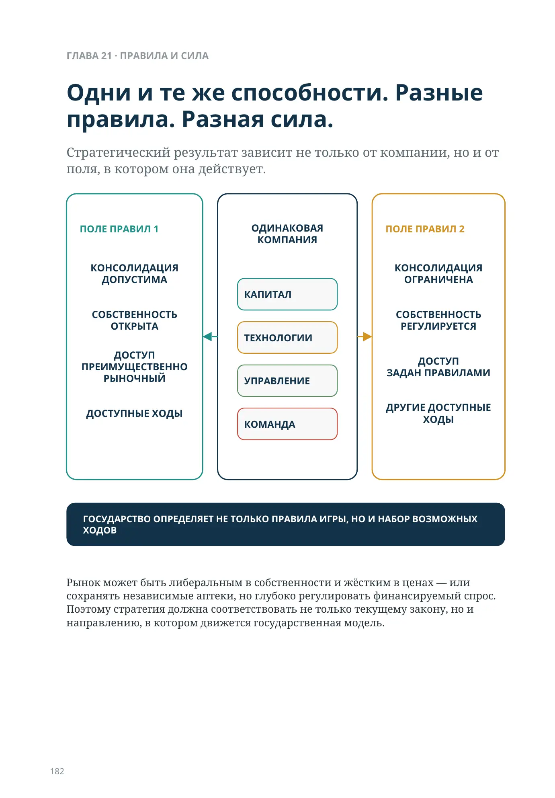
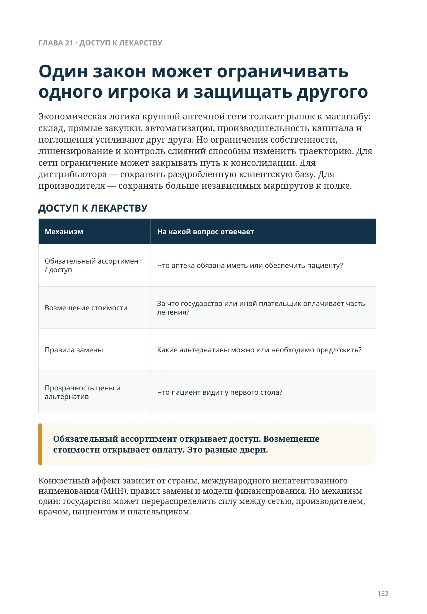
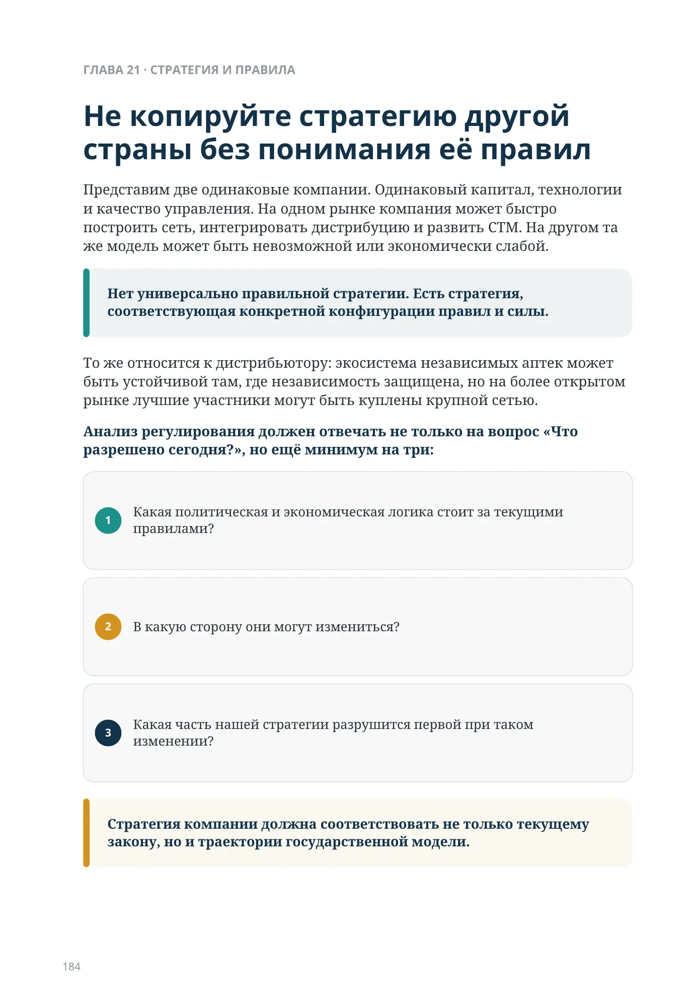
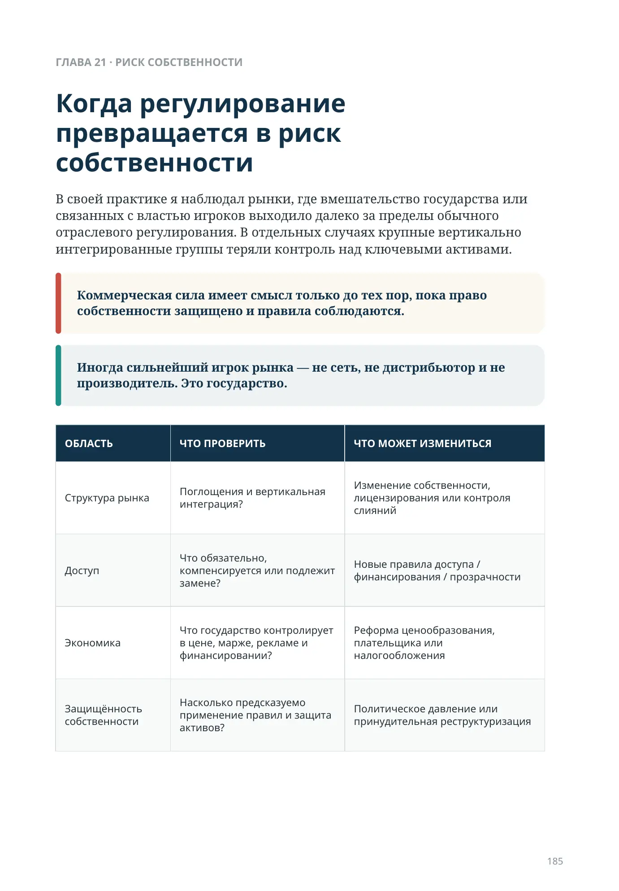

Государство меняет игру
Собственность, возмещение стоимости, обязательный доступ и политический риск
Можно ли построить сильнейшую аптечную сеть, лучший склад и эффективную вертикаль — и всё равно потерять стратегическую позицию?
Да. Если государство меняет правила быстрее, чем компания способна адаптироваться.
Государство — не внешний фон рынка. Оно определяет границы, внутри которых вообще возможна эволюция.
Государство может разрешить консолидацию или остановить её; определить правила собственности, возмещения стоимости, обязательного доступа и замены; влиять на цены и лицензирование. В крайнем сценарии вопрос может затронуть саму защищённость собственности.
ЧЕТЫРЕ РОЛИ ГОСУДАРСТВА
| Режим | Что меняется |
|---|---|
| Разрешающий рынку расти | Консолидация и вертикальная интеграция получают больше пространства |
| Сохраняющий структуру | Ограничения собственности / размещения поддерживают раздробленность |
| Регулирующий доступ | Возмещение, обязательный ассортимент, замена и цены перераспределяют силу |
| Интервенционный / рискованный | Политическая сила может оказаться выше экономической эффективности |
Рынок может быть либеральным в собственности и жёстким в ценах — или сохранять независимые аптеки, но глубоко регулировать финансируемый спрос. Поэтому стратегия должна соответствовать не только текущему закону, но и направлению, в котором движется государственная модель.
Одни и те же способности. Разные правила. Разная сила.
Стратегический результат зависит не только от компании, но и от поля, в котором она действует.
- Консолидация допустима
- Собственность открыта
- Доступ преимущественно рыночный
- Доступные ходы
- Капитал
- Технологии
- Управление
- Команда
- Консолидация ограничена
- Собственность регулируется
- Доступ задан правилами
- Другие доступные ходы
ГОСУДАРСТВО ОПРЕДЕЛЯЕТ НЕ ТОЛЬКО ПРАВИЛА ИГРЫ, НО И НАБОР ВОЗМОЖНЫХ ХОДОВ.
Один закон может ограничивать одного игрока и защищать другого
Экономическая логика крупной аптечной сети толкает рынок к масштабу: склад, прямые закупки, автоматизация, производительность капитала и поглощения усиливают друг друга. Но ограничения собственности, лицензирование и контроль слияний способны изменить траекторию. Для сети ограничение может закрывать путь к консолидации. Для дистрибьютора — сохранять раздробленную клиентскую базу. Для производителя — сохранять больше независимых маршрутов к полке.
ДОСТУП К ЛЕКАРСТВУ
| Механизм | На какой вопрос отвечает |
|---|---|
| Обязательный ассортимент / доступ | Что аптека обязана иметь или обеспечить пациенту? |
| Возмещение стоимости | За что государство или иной плательщик оплачивает часть лечения? |
| Правила замены | Какие альтернативы можно или необходимо предложить? |
| Прозрачность цены и альтернатив | Что пациент видит у первого стола? |
Обязательный ассортимент открывает доступ. Возмещение стоимости открывает оплату. Это разные двери.
Конкретный эффект зависит от страны, международного непатентованного наименования (МНН), правил замены и модели финансирования. Но механизм один: государство может перераспределить силу между сетью, производителем, врачом, пациентом и плательщиком.
Не копируйте стратегию другой страны без понимания её правил
Представим две одинаковые компании. Одинаковый капитал, технологии и качество управления. На одном рынке компания может быстро построить сеть, интегрировать дистрибуцию и развить СТМ. На другом та же модель может быть невозможной или экономически слабой.
Нет универсально правильной стратегии. Есть стратегия, соответствующая конкретной конфигурации правил и силы.
То же относится к дистрибьютору: экосистема независимых аптек может быть устойчивой там, где независимость защищена, но на более открытом рынке лучшие участники могут быть куплены крупной сетью. Анализ регулирования должен отвечать не только на вопрос «Что разрешено сегодня?», но ещё минимум на три:
| 1 | Какая политическая и экономическая логика стоит за текущими правилами? |
|---|---|
| 2 | В какую сторону они могут измениться? |
| 3 | Какая часть нашей стратегии разрушится первой при таком изменении? |
Стратегия компании должна соответствовать не только текущему закону, но и траектории государственной модели.
Когда регулирование превращается в риск собственности
В своей практике я наблюдал рынки, где вмешательство государства или связанных с властью игроков выходило далеко за пределы обычного отраслевого регулирования. В отдельных случаях крупные вертикально интегрированные группы теряли контроль над ключевыми активами.
Коммерческая сила имеет смысл только до тех пор, пока право собственности защищено и правила соблюдаются.
Иногда сильнейший игрок рынка — не сеть, не дистрибьютор и не производитель. Это государство.
| ОБЛАСТЬ | ЧТО ПРОВЕРИТЬ | ЧТО МОЖЕТ ИЗМЕНИТЬСЯ |
|---|---|---|
| Структура рынка | поглощения и вертикальная интеграция? | Изменение собственности, лицензирования или контроля слияний |
| Доступ | Что обязательно, компенсируется или подлежит замене? | Новые правила доступа / финансирования / прозрачности |
| Экономика | Что государство контролирует в цене, марже, рекламе и финансировании? | Реформа ценообразования, плательщика или налогообложения |
| Защищённость собственности | Насколько предсказуемо применение правил и защита активов? | Политическое давление или принудительная реструктуризация |
Автоматизированная выдача: технология и право движутся с разной скоростью
Электронная идентификация, ePrescription, проверка права, автоматизированное хранение и защищённая выдача могут технически соединяться в один процесс. Но право выдавать конкретную категорию лекарств автоматически, требования к присутствию фармацевта и порядок консультации определяются национальным регулированием.
Технологическая возможность не является юридическим разрешением.